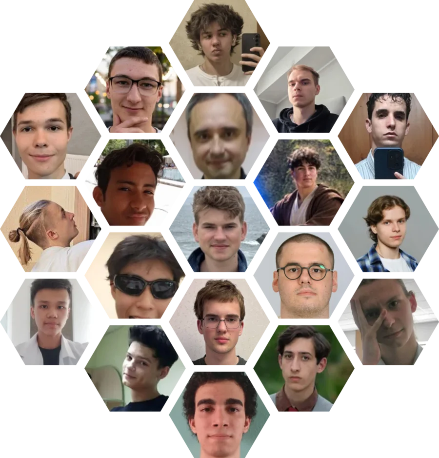

SavchenkoSolutions.com has had more than a million page views from over 125,000 readers in 150 countries, and students now open its solutions more than 3,000 times a day. At 16, in October 2023, when AI models still could not solve olympiad physics problems, I founded the site and the volunteer community that wrote the first complete solution manual to Savchenko's Problems in Physics, a 2,023-problem book that had trained high school olympiad students across the former Soviet Union for thirty years without one. Students without a strong teacher can now check their work.
I recruited and led a fully remote team of 102 volunteers from 23 countries, from Cuba to Kazakhstan. I wrote or co-wrote 986 solutions and nearly every early edit myself, then handed the work over. It works as a crowdsourcing platform for collaborative problem solving, where anyone can publish a solution to a physics problem and volunteers review and improve it. Volunteers now make 94% of the edits and have solved more than 1,000 problems without me. Its 1,078 members have made over 20,000 edits by hand and exchanged more than 3,700 messages. The last problem was solved on 2 October 2026, and every solution was written by a person.

Belarus Science Olympiad Infrastructure (BelSO.org)
I prepared for the national physics olympiad alone in Mazyr, where past papers with solutions were scattered or missing. Then I built what I had lacked. I founded belpho.org, the first unified platform for national physics olympiad preparation in Belarus, so that pupils outside Minsk have what students at the capital lyceum had.
An estimated 90% of recent gold and silver medalists of the national stage used it. With the national jury, I help organize preparation and deliver its problems, solutions and results at each olympiad, and the International Physics Olympiad country page lists belpho.org as the contact for Belarus. I later founded belastro.org and belmath.org to close the same gap in astronomy and mathematics.
Teaching and Outreach
Since spring 2025 I have been a physics teaching assistant at Berea, with four lab sections of 15 to 21 students, grading and evening tutoring. This fall I am the lab associate for two electronics courses.
I run the Physics Club's public telescope nights and in 2026 was elected a senator at large in student government. Before college I taught C++ to the junior group of a programming club in Mazyr and helped organize a national junior programming olympiad.